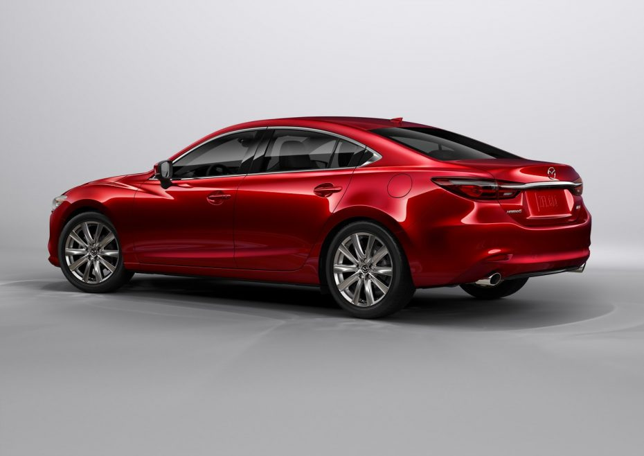
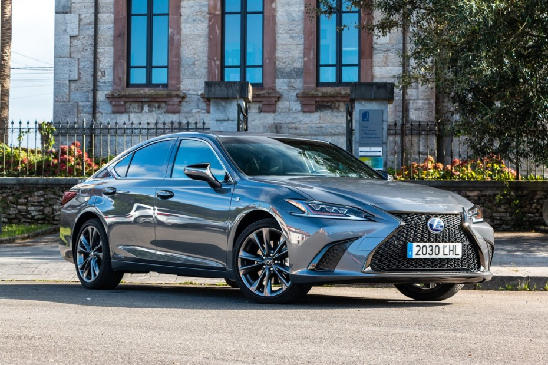
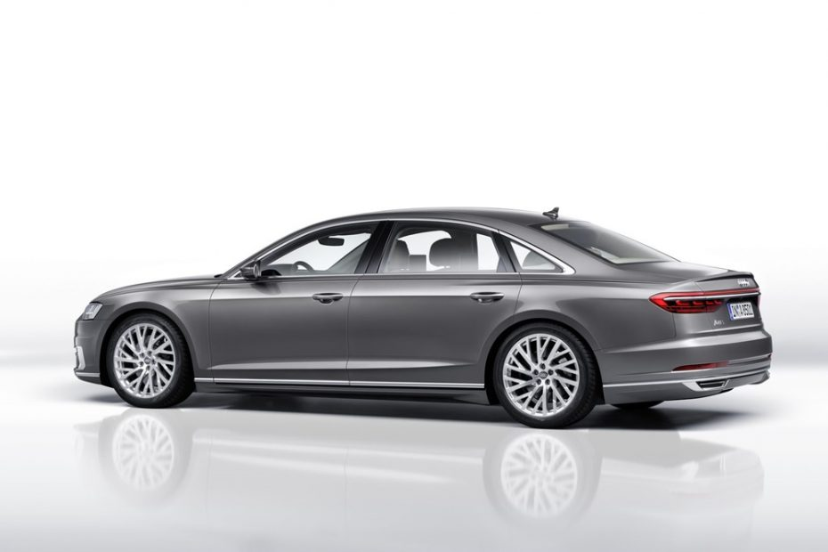

Vehiculo formado por una plataforma con barandillas montada sobre ruedas, que se mueve tirado por animales y sirve para el transporte de personas y de mercancías, herramientas y otras cosas.
Carro es una voz patrimonial del latín carrus, de origen céltico. A la misma familia etimológica latina pertenecen carrera, carretera, carril, carroza, carruaje y ferrocarril.
El carro llegó a Europa y Asia occidental en el cuarto milenio antes de Cristo, y al Valle del Indo hacia el tercer milenio antes de Cristo. A América, llegó en el siglo XVI, directamente de la mano de los conquistadores españoles, así como los caballos y las mulas, ya que al carecer de animales de carga los nativos americanos cargaban las cosas a la espalda.
Tipos de coches por carrocería
Tipo Urbano
En el segmento de los urbanos podemos encontrar una gran variedad de modelos de distinto tamaño. En este grupo podríamos meter desde los micro-coches o pequeños utilitarios como el smart fotwo y el Tata Nano hasta vehículos algo más grandes como el SEAT Mii, el Toyota Aygo, el Hyundai i10, el Kia Picanto o el Como su propio nombre indica, se caracterizan por su reducido tamaño y están pensados para circular por la ciudad, ya que gozan de algunas virtudes como la maniobrabilidad, la facilidad para aparcar o los bajos consumos.
Tipo Subcompacto
Este tipo de coches pueden tener tres, cuatro o cinco puertas, dependiendo un poco del diseño de su carrocería. Están diseñados para que puedan viajar cuatro pasajeros cómodamente y se corresponden con lo que conocemos como segmento B -aproximadamente de 3,9 a 4,3 metros de longitud. Los ejemplos son muchos, tales como Renault Captur, Opel Corsa, Ford Fiesta, Kia Rio, Peugeot 2008… Es importante señalar que algunos de estos modelos se ofrecen también en carrocería sedán, crossover (también conocidos como B-SUV) o monovolumen, por lo que hay que tener en cuenta que hay distintos tipos de coches dentro de un mismo segmento.
Tipo Hatchback / compacto
Vamos a coger la palabra hatchback con pinzas, porque este término hace referencia, en sentido literal, a aquél automóvil compuesto por dos espacios diferenciados: el de los pasajeros y el del espacio de carga o maletero, al que se accede desde un portón. Según esto,un hatchback puede abarcar todo tipo de vehículos de tres y cinco puertas, pero popularmente esta denominación se emplea para los modelos compactos.
Tipo Familiar
Son aquellos turismos derivados de compactos, sedanes o berlinas con carrocería de cinco puertas y techo elevado, a fin de ampliar el compartimento de carga , es decir, poseen una carrocería familiar o lo que comúnmente llamaríamos “ranchera”, Tourer, Break… En los familiares hay coches de todos los segmentos, pues pensemos en un SEAT León ST, un Hyundai i30 CW o un Škoda Superb Combi. Poseen dos volúmenes, como los todoterrenos -capó y habitáculo- y pueden lucir una estética normal o ‘campera’, basta con recordar ejemplos como el Mercedes-Benz Clase E AllTerrain o el Audi A6 Allroad. Tampoco podemos olvidar los Shooting Brake, tales como el Mercedes-Benz CLA o el Porsche Panamera Sport Turismo, aunque en muchas ocasiones este tipo de modelos se saca de la denominación “familiar”.
Tipo Sedán
A menudo se tiende a denominar a las berlinas como sedanes y viceversa, pero realmente no son lo mismo, pues un sedán es un turismo de tres volúmenes en el que desde el compartimento de carga no se permite el acceso al habitáculo, ya que la tapa del maletero los separa. Son lo que se conoce como modelos de cuatro puertas en los que la tapa del maletero no incluye el vidrio trasero. Por ejemplo, el Audi A3 sedán.
Tipo Berlina
Son turismos de tres volúmenes que cuentan con tres partes totalmente diferenciadas: capó, habitáculo y maletero. A diferencia de los sedanes, la tapa del maletero sí que incluye la luna trasera, por lo que hay acceso al espacio de carga desde el habitáculo. Podemos encontrarlas en diferentes segmentos dependiendo de su tamaño:
Segmento D o berlina: miden entre aproximadamente 4,5 y 4,8 metros de longitud y están orientadas a la carretera, pues ofrecen gran confort y buen espacio de carga. Algunos ejemplos son el Ford Mondeo, el Audi A4 o el Mazda6

Segmento E o berlina media: miden entre aproximadamente 4,85 y 4,95 metros de longitud y, en Europa, suelen ser vehículos de gama alta o lo que se conoce como executive cars porque el potencial comprador espera que le otorgue por lo general un notable estatus social. De ahí que en su gran mayoría sean modelos de gama alta como Lexus, BMW, Jaguar, Maserati, Infiniti…

Segmento F, berlinas grandes o berlinas de representación: son el súmmum del lujo, los buques insignia de las marcas. Miden entre aproximadamente 5,10 y 5,15 metros de longitud, aunque también se ofrecen con carrocería larga –Long Wheel Base– que puede superar incluso los 5,25 metros. Están pensadas para que las conduzca un chófer, por lo que gozan de toda clase de lujos en las plazas traseras. Pensemos en un Audi A8L, un Rolls-Royce Phantom o un Range Rover LWB.

Tipo Descapotable
Un coche convertible es un vehículo con un tipo de carrocería que tiene el techo practicable -es decir, se puede guardar y poner- fabricado en material maleable o en metal. Como vemos hoy en día, el coche cerrado ha ganado la batalla al cabrio. Por una parte, hemos de pensar en la seguridad y en la mala fama que se granjearon en Estados Unidos allá por la década de 1970 y, por otra mucho más evidente, es más barato hacer un coche cerrado que uno descapotable.
👆


👆